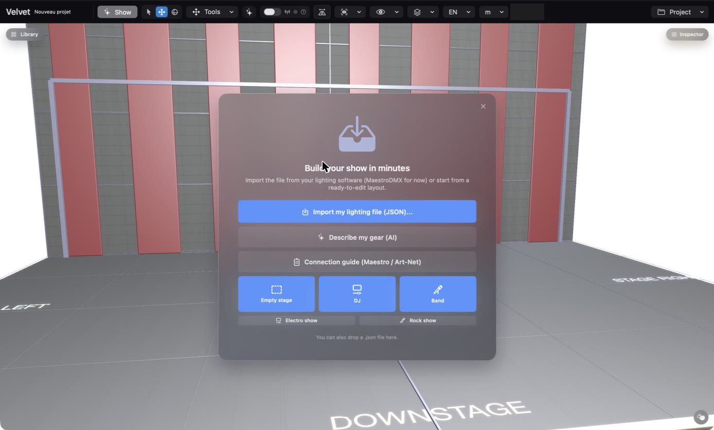
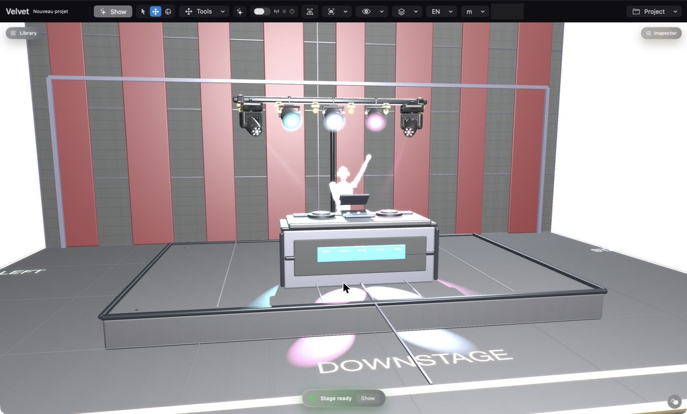
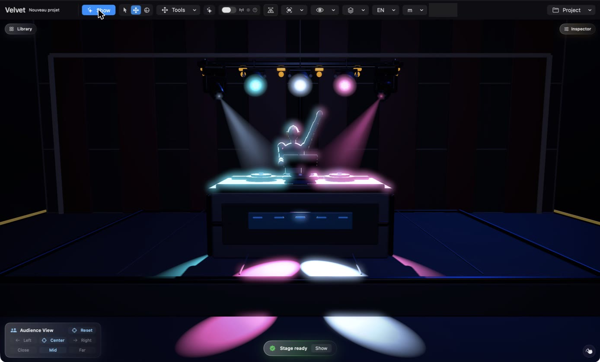
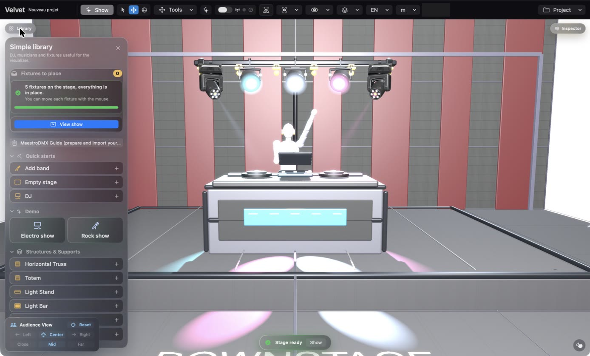
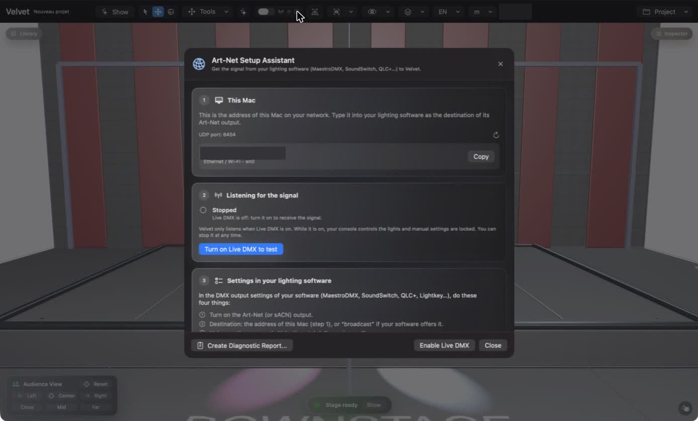

Velvet Visualizer, step by step: your first 5 minutes
No lighting-console knowledge needed. By the end of this page you will have a stage on your screen, your lights playing in 3D, and you will know how to plug in your own lighting software.
Double-click the .zip to unzip it, then drag Velvet Visualizer into your Applications folder.
Open it. You get 30 days to try everything, no account, no card.
1Pick a starting point
The first time you open the app, a welcome card asks how you want to start. The simplest choice is DJ: a ready-made stage with a DJ booth and a few lights.

The welcome card. Click DJ to get started, or Electro show / Rock show to watch a demo.
Use MaestroDMX? Choose Import my lighting file (JSON) instead and your fixtures are placed for you.
2Look at your stage
Your stage appears with its lights. Click and drag a light to move it. The panel at the bottom says Stage ready when everything is in place.

The DJ starting point: a booth, a truss and five lights.
3Switch the lights on: Show mode
Click Show at the top left. The room goes dark so you can see the beams, like at a real gig. A small Audience View panel lets you look from the left, the centre or the right. Click Show again to come back.

Show mode: what your audience would see.
4Add your own lights
Click Library (top left). Type the name of your fixture in the search box under Real fixtures. Not found? Click Search online: thousands of models are available. Still nothing? Create… lets you describe it yourself.

The Library: quick starts, demo shows, structures and your fixtures.
5Connect your lighting software
This is the step that makes the stage react to your show. Click the small ? next to the Live DMX switch: the Art-Net Setup Assistant opens.

The Setup Assistant. Step 1 shows this Mac's network address (hidden here).
Copy the address shown in step 1.
In your lighting software (MaestroDMX, SoundSwitch, QLC+…), turn on the Art-Net output and paste that address as the destination.
Back in Velvet Visualizer, click Turn on Live DMX to test. Play a light in your software: each step in the assistant turns green when the signal arrives.
Another app already uses the Art-Net port (SoundSwitch, for example)? Velvet Visualizer switches to a local mode on its own and shows a blue LOCAL light. It then receives what is sent from this same Mac.
Save and share
Use the Project menu (top right) to save your stage or to export a PDF plan for your technician or your client.
Stuck?
Everything is explained in the full user guide. You can also write to me directly: I'm a solo developer and I read everything.